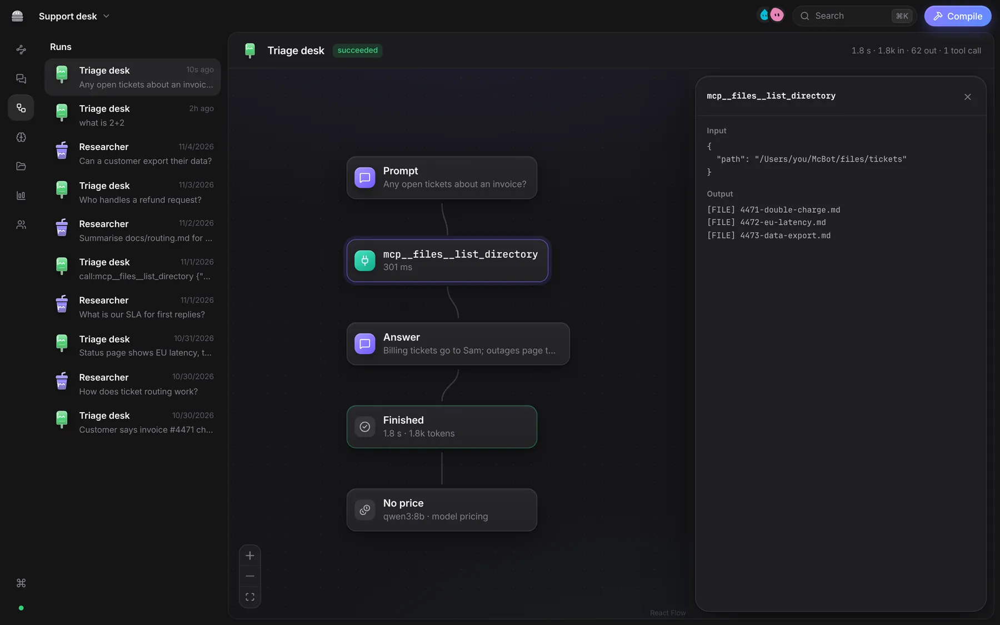
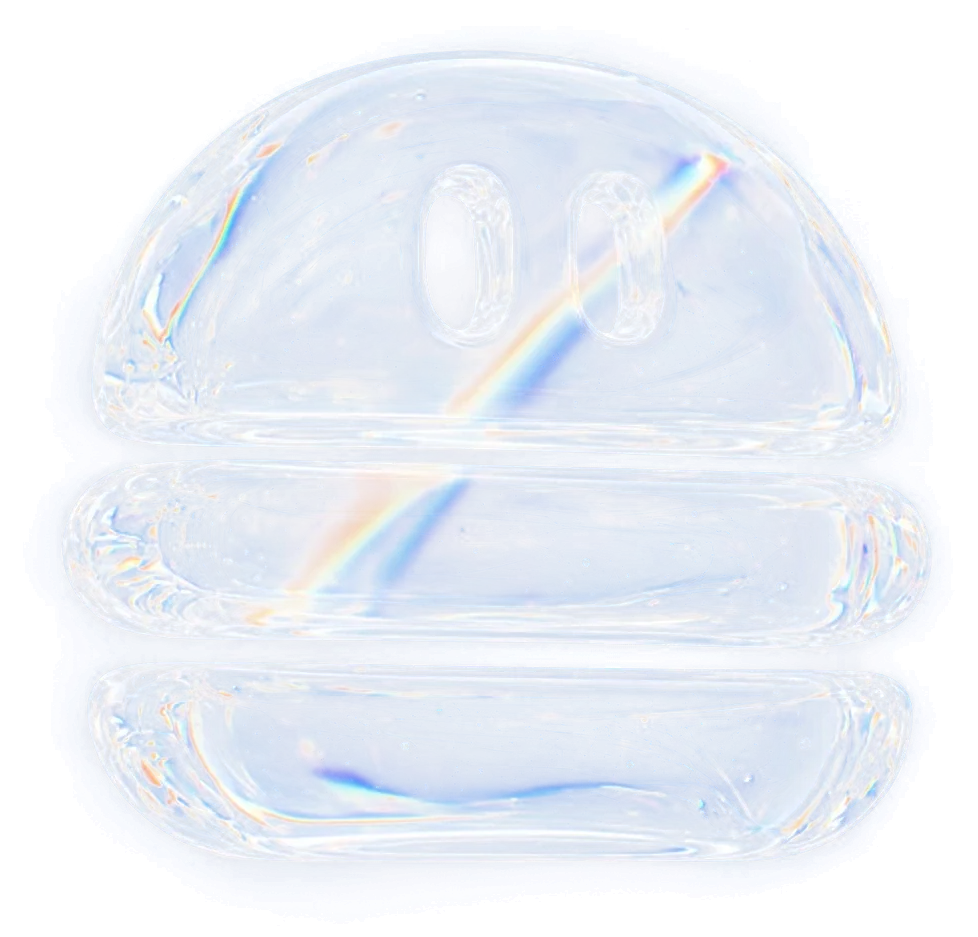
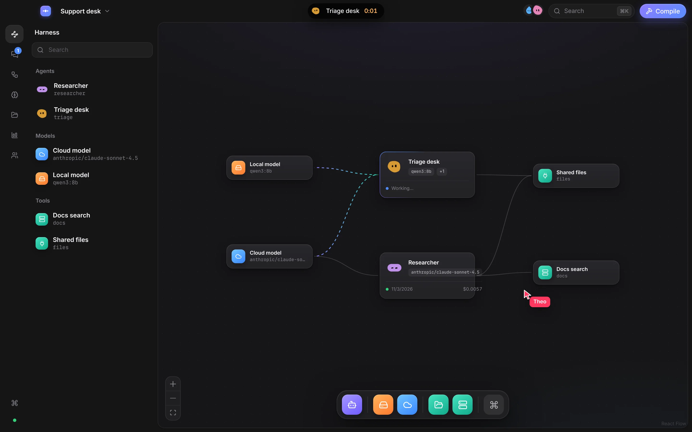
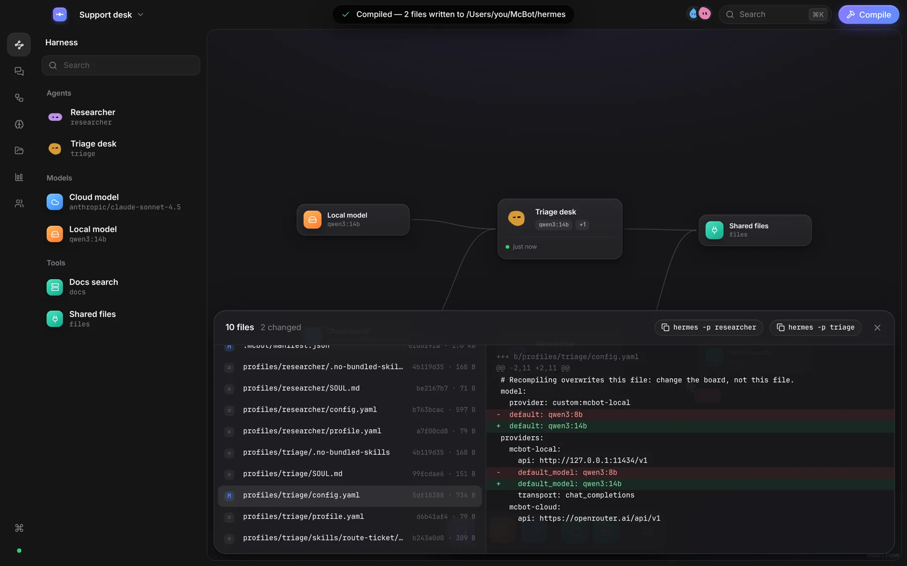
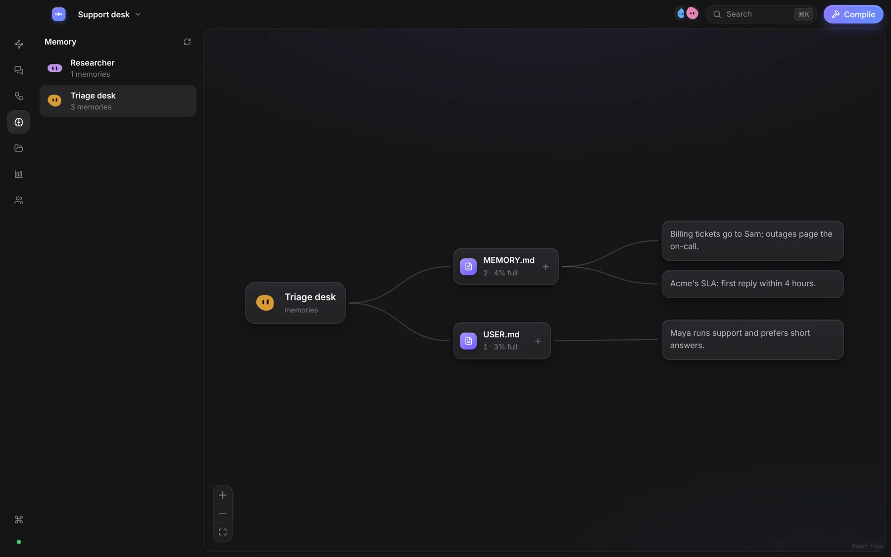
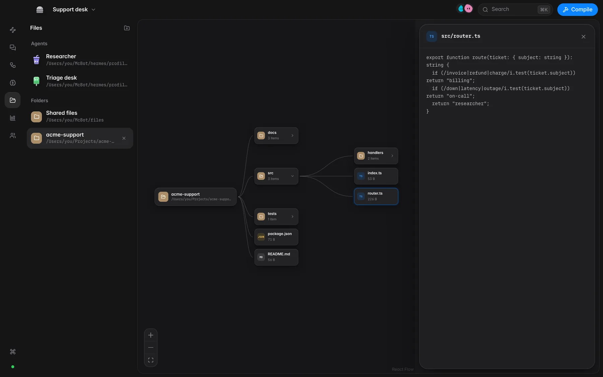
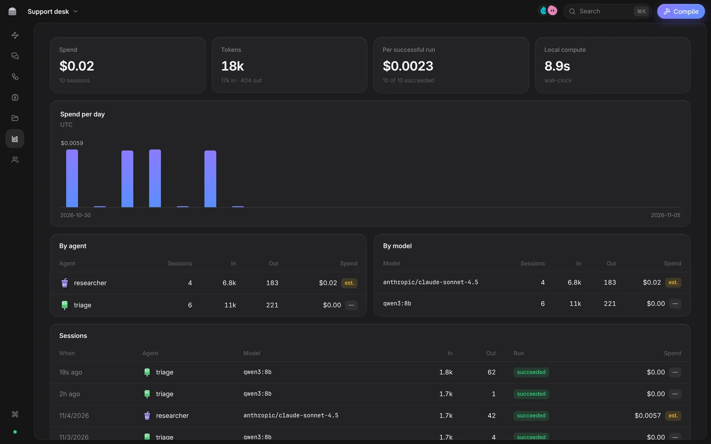

Runs
Every step, tool call and token, laid out as it happened.


McBot turns a graph of agents, models and tools into working agents on your computer. The same graph shows what every agent is doing, remembers and costs.

Works with
Its eyes show what it is doing: working, done or stuck.
No config files to write by hand. What you draw is what runs.
Drag a model onto an agent. Add a second one and it becomes the fallback. Plug in tools.
⌘S writes each agent's files: SOUL.md, config.yaml, skills. Every file hashed, every change shown as a diff.
Message an agent. Its node lights up, tool calls glow, and every run is kept as a graph.

Every step, tool call and token, laid out as it happened.

What each agent has learned. Edit it in place.

Open any folder and browse it as a graph.

Spend and tokens per agent, model and day. Estimates are labelled.

McBot is the board and the engine: memory, skills, tools and chat apps, running on your own computer.
Each agent compiles to a folder of ordinary files.
Give an agent its own Telegram bot. It answers the people you allow, while your computer is on.
Install McBot, open it, start drawing.
Free and open source, not signed yet, so your computer asks once. macOS: open McBot, then System Settings → Privacy & Security → Open Anyway. Windows: More info → Run anyway. The first launch prepares the engine in a few minutes. All releases on GitHub.
Read the code, run it yourself, make it better.